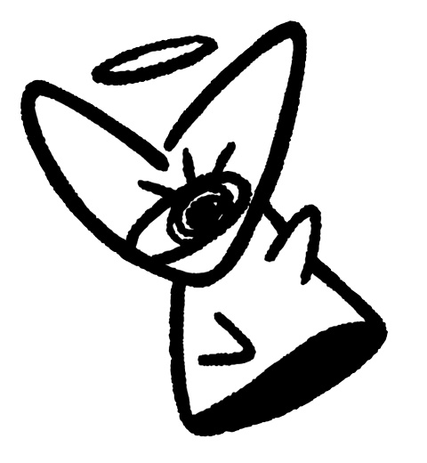

Guía visual · Aldo Iván
Entender.
Dar forma.
Mostrar.

Un sistema para ordenar la mirada. Fondo claro, tipografía variable y movimiento medido convierten la observación en una experiencia que se puede explorar. Cada decisión de esta guía tiene una función visible en el portafolio.
01 / Color
Una paleta, seis funciones
El color organiza lectura, superficie e interacción. Los colores de cada obra aparecen dentro de sus imágenes y no cambian la identidad de la interfaz.
#F4F4F4Base continua de la página.
#FFFFFFMarcos y superficies elevadas por contraste.
#0C0C0CLectura principal, Contenido y contacto.
#4F4F4FDescripciones y datos auxiliares.
#105EF9Enlaces, foco, etiquetas e ideas destacadas.
#0000F4Texto de las cintas en movimiento.
Lectura comprobada
| Texto / fondo | Contraste | Resultado |
|---|---|---|
| Tinta / fondo | 17.8:1 | Cumple AA |
| Secundario / fondo | 7.45:1 | Cumple AA |
| Azul de interacción / fondo | 4.78:1 | Cumple AA |
| Texto claro / banda negra | 17.8:1 | Cumple AA |
02 / Tipografía
Dos voces, una jerarquía
DM Sans concentra el gesto de la firma y los títulos. Manrope sostiene la lectura. Ambas son variables y se cargan localmente.
DM Sans
Firma · títulos · navegación · controles
Manrope
Lectura · etiquetas · metadatos
Escala aplicada
DM Sans · 200 · hasta 106 px · móvil 52–78 pxDM Sans · 300 · hasta 70 px · móvil 30–48 pxDM Sans · 700 · 48/52 px · móvil 32/36 pxDM Sans · 700 · 56/58 px · móvil desde 32 pxManrope · 400 · 16/25 pxDM Sans 500 · 16/20 px · Manrope 400 · 14/20 pxLa firma reacciona cada vez que se acerca el cursor: todas las letras parten de extraligero y progresan hacia distintos pesos, hasta negro en la última. La frase responde por letra, dentro de la línea más próxima.
03 / Retícula
Orden con espacio
Un mismo margen alinea navegación, textos y secciones. La portada centra sus cuatro elementos; Sobre mí vuelve al eje izquierdo.
Título del trabajo
Descripción breve y alcance.
Las secciones se separan 56, 72 y 96 px según el ancho. Bajo 1024 px la presentación de trabajos pasa a una columna. El índice y las cintas cruzan el ancho completo; la página nunca debe desplazarse lateralmente.
04 / Profundidad y movimiento
Movimiento que orienta
El contraste entre fondo claro, tarjetas blancas y bandas negras crea profundidad. Las sombras aparecen en los controles sobre imágenes y, temporalmente, en la tarjeta activa del índice.
Texto que invita a explorar
Las cintas cruzan la pantalla de derecha a izquierda. Acerca el cursor a las letras: cambian gradualmente de tamaño y peso sin desplazar el texto.
Las cintas y las tarjetas avanzan de forma repetida.
Firma, frase y cintas responden letra por letra.
El índice y las miniaturas se detienen o ralentizan al interactuar; las cintas siguen avanzando. La preferencia de movimiento reducido deja opciones manuales.
La cabecera clara usa desenfoque de 16 px. Las secciones aparecen con un desplazamiento y fundido corto al entrar en pantalla. No hay botón de pausa en la cabecera.
05 / Formas
Una familia de marcos
La repetición del radio da continuidad al recorrido. Los marcos y controles conservan su forma al interactuar.
Marcos y tarjetas
Control
Las imágenes ocupan el marco blanco de 20 px sin cambiar sus esquinas al interactuar. Cuando hace falta ver un detalle, el contenido se amplía y se arrastra dentro del mismo marco.
06 / Componentes
Piezas que se repiten
La guía muestra componentes reales como reglas reutilizables. Sus estados mantienen foco visible y una función comprensible.
Navegación
Firma a la izquierda; tres enlaces centrados en escritorio y menú en móvil.
Control circular
38 px; fondo blanco sobre imagen, sombra leve y estado deshabilitado claro.
Índice horizontal
Tres tarjetas en una banda negra; avance automático y desplazamiento manual.
Enlace y foco
El azul identifica una acción sobre fondo claro. El subrayado confirma su función.
Consultar reglas ↗Presentación de un trabajo
Título del trabajo
Intención y alcance en pocas líneas. La imagen conserva el protagonismo.
Regla: texto a la izquierda, marco principal a la derecha y miniaturas superpuestas que alcanzan el margen izquierdo. La vista elegida ocupa el marco grande; flechas, miniaturas y trackpad permiten recorrerla. En móvil, las piezas se apilan.
07 / Reglas
Lo que sí y lo que no
Estas decisiones conservan la identidad cuando cambian el contenido, el tamaño de pantalla o el tipo de interacción.
Sí
- Mantener la lectura clara y la secuencia narrativa.
- Usar DM Sans para jerarquía y Manrope para lectura.
- Reservar el azul para interacción y acentos medidos.
- Conservar el radio de 20 px y el espacio entre marcos.
- Permitir teclado, trackpad y movimiento reducido.
- Identificar las propuestas académicas y la colaboración con honestidad.
No
- Añadir colores a la interfaz solo por decoración.
- Aplicar cristal o sombras permanentes a las tarjetas.
- Estirar imágenes o alterar el radio entre estados.
- Dejar animaciones que impidan leer o seleccionar.
- Usar únicamente el color para señalar una acción.
- Documentar controles que la página no tiene.